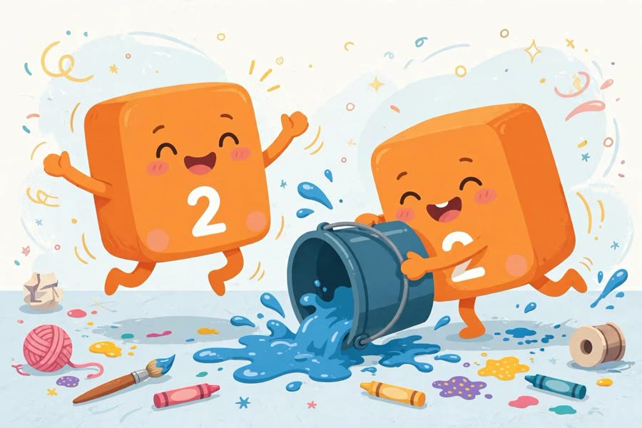
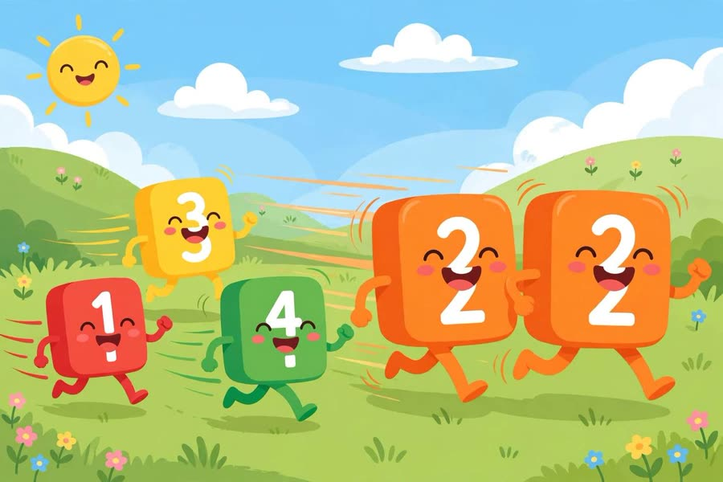

📖 剧情简介
四号分成两个二号，两个捣蛋的二号到处闯祸！原来数字可以分成几份！
Four splits into two Twos — the terrible twos cause mischief! Numbers can split into parts!
🎭 角色
一号 One、二号甲 Two A、二号乙 Two B、三号 Three、四号 Four
（数字乐园，四号表演 / Numberland, Four puts on a show）
4
Four四号
Watch this! I can split apart!
看好了！我可以分开！
（四号分成两个二号 / Four splits into two Twos）
T
Two A二号甲
We're the terrible twos!
我们是捣蛋的二们！

We're the terrible twos!
T
Two B二号乙
Double trouble!
双倍捣蛋！
（两个二号跑来跑去 / The two Twos run around）
3
Three三号
Hey! Come back here!
嘿！快回来！
T
Two A二号甲
Catch us if you can! One and one is two!
抓得到我们再说！一加一等于二！

Catch us if you can!
3
Three三号
I can split too! One and two!
我也会分！一和二！
（三号分成一号和二号 / Three splits into One and Two）
1
One一号
Three is one and two!
三是一和二！
4
Four四号
And four is two and two! Splitting is fun!
四是二和二！分开真好玩！